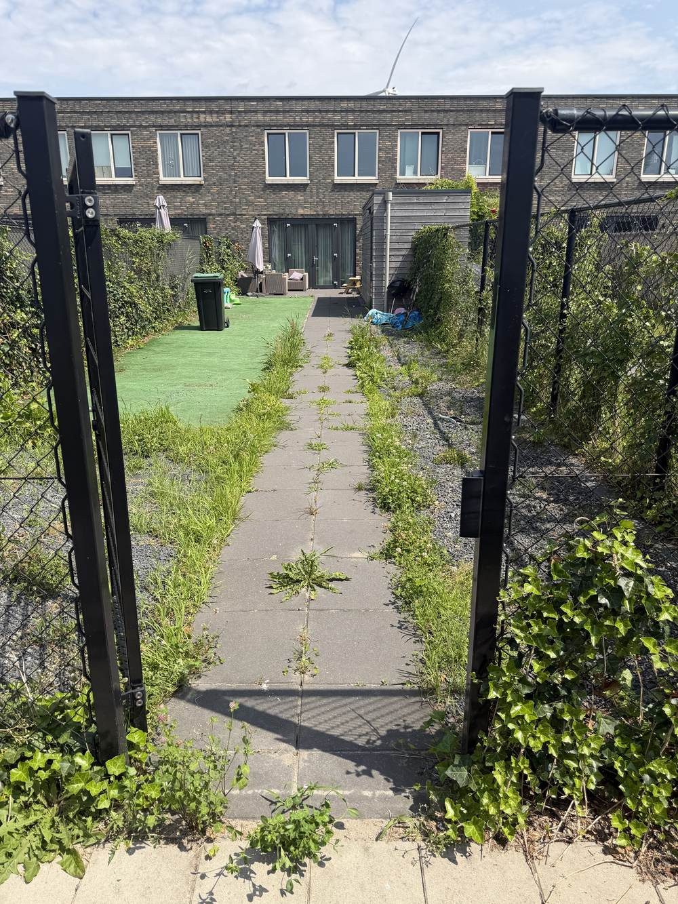
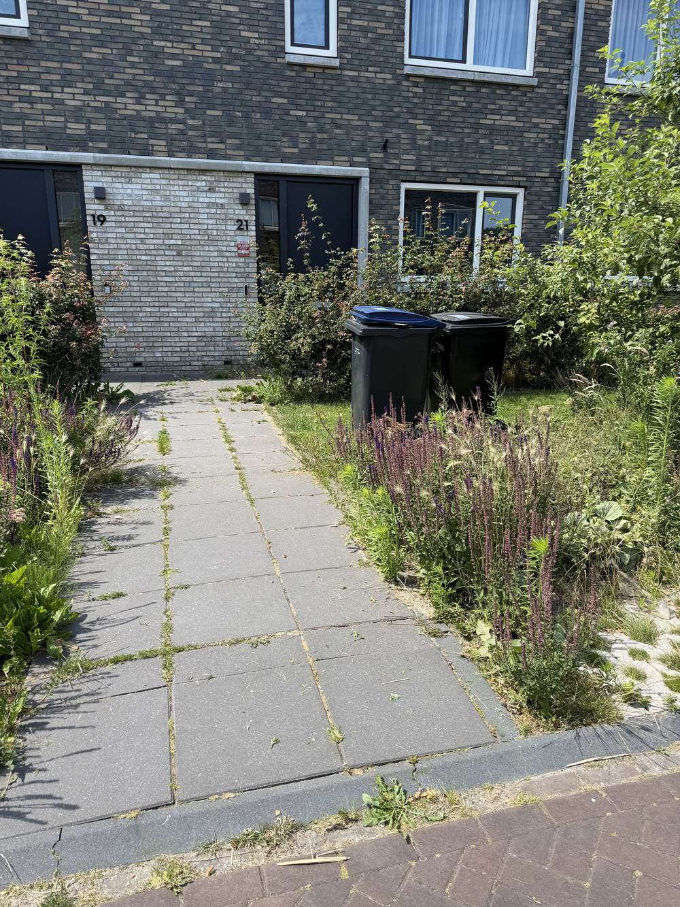
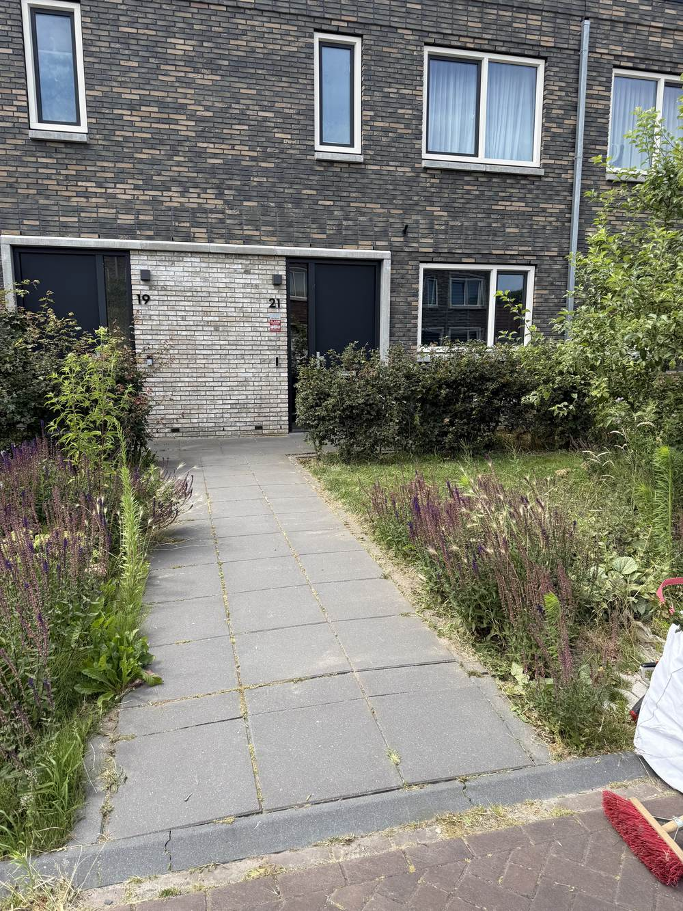
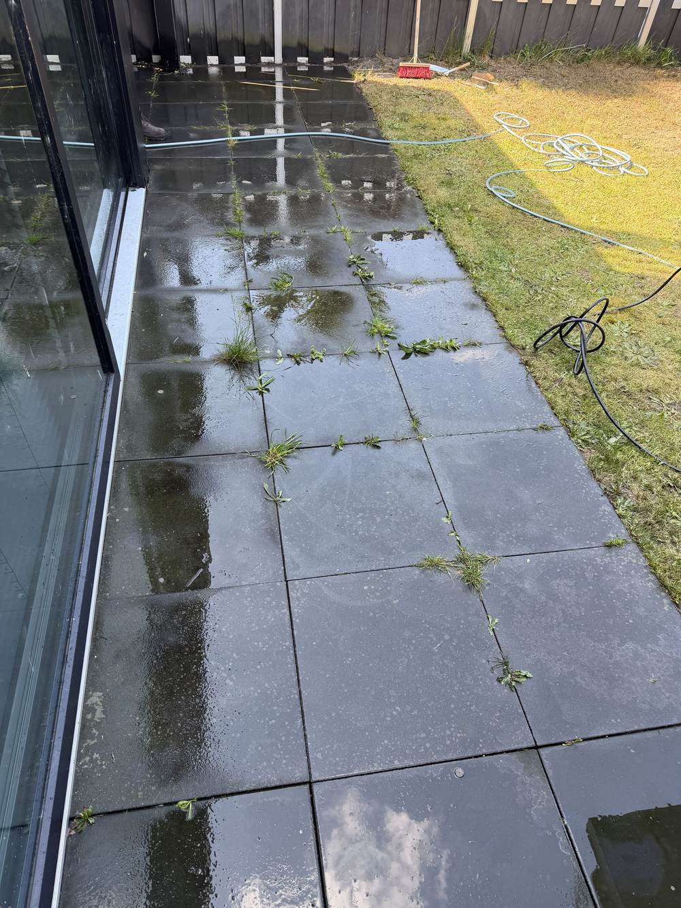
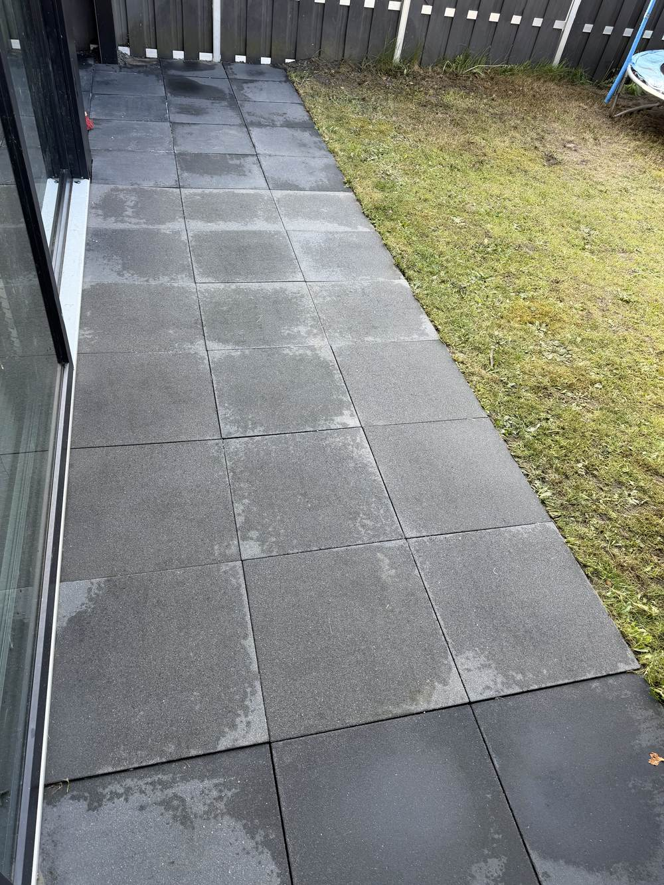
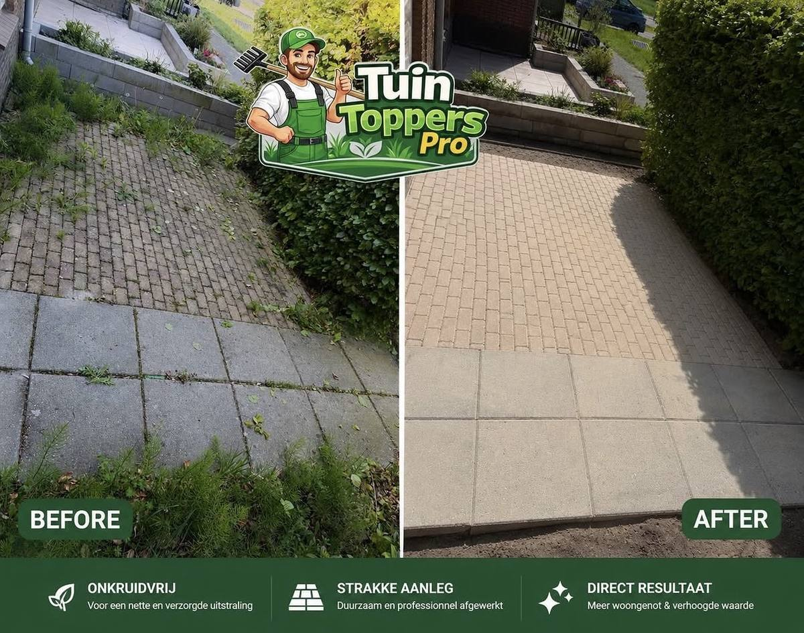
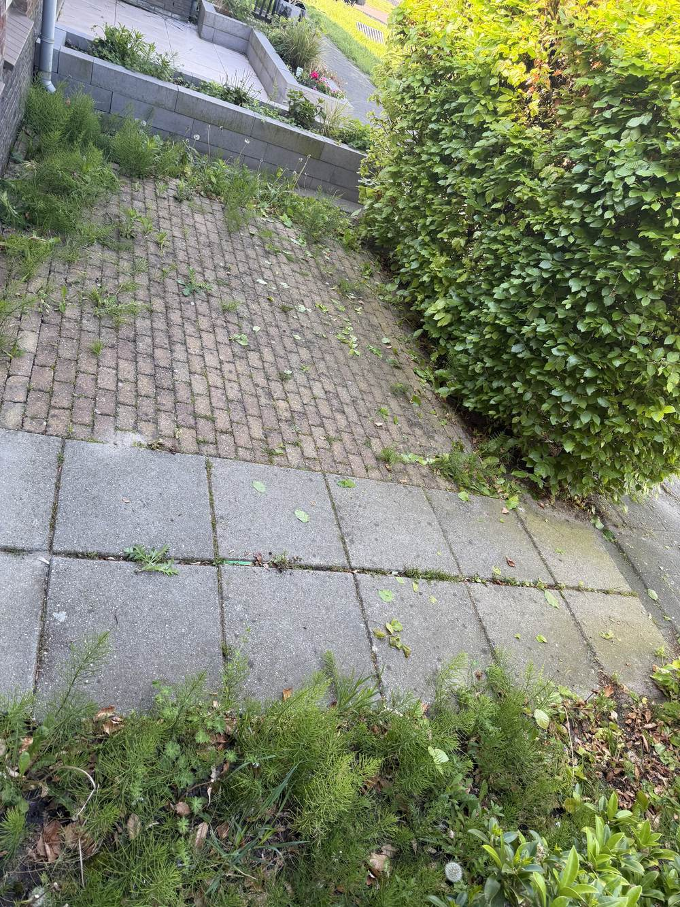

Praten over kwaliteit is makkelijk — laten zien is beter. Sleep de schuifregelaar in elk voorbeeld hieronder en bekijk zelf het verschil dat TuinToppersPro maakt.
Dit achterpad tussen terras en berging zat vol onkruid tussen de tegels. Na een grondige behandeling — inclusief wortels — ligt het pad er weer strak en verzorgd bij.

 Voor
Na
Voor
Na
Het grindpad naar de achteruitgang was overwoekerd door onkruid en gras. Wij hebben het pad volledig vrijgemaakt, zodat het weer veilig en netjes begaanbaar is.

 Voor
Na
Voor
Na
Het pad naar de voordeur stond vol met gras en onkruid tussen de tegels. Na behandeling is het pad weer volledig vrij, terwijl de sierbeplanting in de border gewoon is blijven staan.


Voor NaOnkruid tussen de terrastegels en een dof oppervlak — met hogedrukreiniging is dit terras weer helemaal fris en schoon, klaar voor het nieuwe seizoen.


Voor NaEen kijkje in het dagelijkse werk van TuinToppersPro.



Vraag een vrijblijvende prijsopgave aan en ontdek wat TuinToppersPro voor uw tuin kan betekenen.